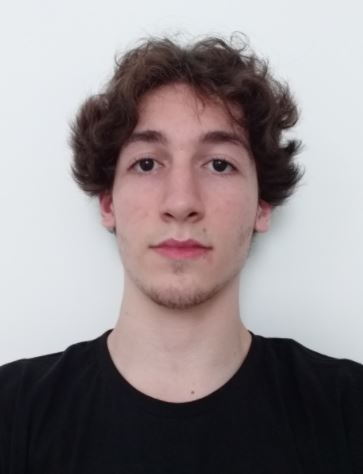

Fábio Cascais
Olá, meu nome é Fábio Gabriel, tenho 17 anos e desde pequeno já gostava de fazer desenhos. Com o passar do tempo, percebi que desenhar era algo que eu queria levar para minha vida. Escolhi o curso de Produção Multimídia justamente para aplicar meus conhecimentos em algo que eu gosto.
Você pode me encontrar em algumas redes sociais, como Twitter e Facebook